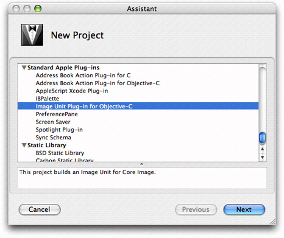
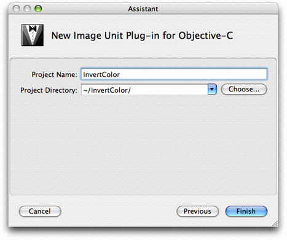

Writing the Objective-C Portion
The kernel, although it is the heart of an image processing filter, becomes an image unit only after it is properly packaged as a plug-in. Your most important tasks in the packaging process are to copy your kernel routine (or routines) into the kernel skeletal file provided by Xcode and to modify the code in the in the implementation and interface files for the filter. There are a few other housekeeping tasks you’ll need to perform to correctly categorize the filter and to identify your image unit as your product. You’ll also need to describe its input parameters.
This chapter provides an overview to the image unit template in Xcode and describes the contents of the filter files. Then, it shows how to create these image units:
A color inversion image unit that uses the
kernelroutine discussed in “Color Inversion.” It uses onesamplerobject and does not require a region-of-interest method.A pixellate image unit that uses the
kernelroutine discussed in “Pixellate.” It uses onesamplerobject and requires one region-of-interest method.A detective lens image unit, which uses the two
kernelroutines discussed in “Writing Kernel Routines for a Detective Lens .” It uses requires severalsamplerobjects and two a region-of-interest methods.
Before you follow the instructions in this chapter for writing the Objective-C portion of an image unit, you should understand how the kernel routines discussed in “Writing Kernels” work.
In this section:
The Image Unit Template in Xcode
Creating a Color Inversion Image Unit
Creating a Pixellate Image Unit
Creating a Detective Lens Image Unit
Next Steps
The Image Unit Template in Xcode
Xcode provides a template that facilitates the packaging process. To help you package an image unit as a plug-in, Xcode provides the skeletal files and methods that are needed and names the files appropriately. Figure 3-1 shows the files automatically created by Xcode for an image unit project named DetectiveLens.
Xcode automatically names files using the project name that you supply. These are the default files provided by Xcode:
<ProjectName>Filter.mis the implementation file for the filter. You will need to modify this file.<ProjectName>Filter.his the interface file for the filter. You will need to modify this file.<ProjectName>FilterKernel.cikernelis the file that contains thekernelroutine (or routines) and any subroutines needed by the kernel. The default code is afunHousekernel routine and asmoothstepsubroutine that’s used byfunHouse. (This subroutine is not the same as the one provided by OpenGl Shading Language.) All you need to do is completely replace this code with thekernelroutine (or routines) that you’ve written (as well as tested and debugged) and any required subroutines.<ProjectName>PlugInLoader.mis the file that implements the plug-in protocol needed to load an image unit. You do not need to make any modifications to this file unless your product requires custom tasks on loading. This chapter does not provide any information on customizing the loading process. It assumes that you’ll use the file as is.<ProjectName>PlugInLoader.his the interface file for the plug-in loading protocol.<ProjectName>.pluginis the plug-in that you will distribute. When you create the project, this file name appears in red text to indicate that the file does not yet exist. After you build the project, the file name changes to black text to indicate that the plug-in exists.Description.plistdefines several properties of the filter: filter name, filter categories, localized display name, filter class, and information about the input parameters to the filter. Executable image units (which are the only image units you’ll see in this tutorial) may have input parameters of any class, but Core Image does not generate an automatic user interface for custom classes (seeCIFilter Image Kit Additions). Input parameters for non-executable image units must be one of these classes:CIColor,CIVector,CIImage, orNSNumber. (For more information on executable and nonexecutable filters, see Core Image Programming Guide.)The default template file is shown in Figure 3-2. Xcode fills in the filter name for you based on the project name that you provide. You need to make changes to the filter categories and localized display name. The filter categories should include all the categories defined by the Core Image API that apply to your filter. For a list of the possible categories, see CIFilter Class Reference.
Info.plistcontains properties of the plug-in, such as development region, bundle identifier, principal class, and product name. You’ll want to modify the bundle identifier and make sure that you define the product name variable in Xcode.
The default code is for a filter that mimics the effect of a fun house mirror. You should recognize the kernel routine as the same one discussed in Listing 2-6. The project will build as a valid image unit without the need for you to change a single line of code.
The filter interface and implementation files provided by Xcode are the ones that you need to customize for your kernel routine (or routines). The interface file declares a subclass of CIFilter. Xcode automatically names the subclass <ProjectName>Filter. For example, if you supply InvertColor as the project name, the interface file uses InvertColorFilter as the subclass name. The default interface file declares four instance variables for the filter: inputImage, inputVector, inputWidth, and inputAmount, which, from the perspective of a filter client, are the input parameters to the filter. You may need to delete one or more of these instance variables and add any that are needed by your image unit.
The implementation file contains four methods that you’ll need to modify for your purposes:
initgets the kernel file from the bundle, and loads thekernelroutines. Unless you require customization at initialization time, you may not need to modify this method.regionOf:destRect:userInfois callback function that defines the region of interest (ROI). If you are writing a filter that does not require an ROI, you can delete this method. If you are unsure of what an ROI is, see Core Image Programming Guide and “Region-of-Interest Methods.” In general, filters that map one source pixel to one destination pixel do not require an ROI. Just about all other types of filters will require that you provide an ROI method, except certain generator filters.customAttributesis a method that defines the attributes of each input parameter. This is required so that the filter host can query your filter for the input parameters, their data types, and their default, minimum, and maximum values. You can also provide such useful information as slider minimum and maximum values. When a filter host calls theattributesmethod, Core Image actually invokes yourcustomAttributesmethod. If your filter does not require any input parameters other than an input image, you can delete this method.outputImagecreates one or moreCISamplerobjects, performs any necessary calculations, calls theapply:method of theCIFilterclass and returns aCIImageobject. The exact nature of this method depends on the complexity of the filter, as you’ll see by reading the rest of this chapter.
Note: A multipass filter is one that either applies two or more kernel routines or applies the same kernel routine more than once before returning a CIImage object from the outputImage method.
The next sections show how to modify the filter files for three types of image units:
“Creating a Color Inversion Image Unit” uses one
kernelroutine but does not need an ROI method.“Creating a Pixellate Image Unit” uses one
kernelroutine and an ROI method.“Creating a Detective Lens Image Unit” is a multipass filter that uses two
kernelroutines and an ROI method for eachkernelroutine.
Creating a Color Inversion Image Unit
A color inversion filter represents one of the simplest image units that you can write. It uses the kernel routine discussed in “Color Inversion.” If you take a look at the kernel routine shown in Listing 2-1 you’ll see that the routine does not use any input parameters other than an input image. So there is no need to supply a customAttributes method. The kernel routine maps one source pixel to a destination pixel that’s at the same coordinates as the source pixel. As a result, there is no need to supply a method that calculates an ROI. You will need to make modifications to the filter interface file and to the outputImage method in the filter implementation file. The default init method will work as is, provided that you do not rename any of the files that Xcode automatically names for you.
To package the color inversion kernel routine as image unit, follow these steps:
Launch Xcode and choose File > New Project.
In the Assistant window, scroll to to Standard Apple Plug-ins, select
Image Unit Plug-in for Objective Cand click Next.Enter
InvertColoras the project name and click Finish.Open the
InvertColorFilterKernel.cikernelfile and replace the code with the code from Listing 2-1.Open the
InvertColor.hfile and delete all the instance variables except forinputImage, as this filter doesn’t have any input parameters other than an input image. Then save and close the file.Open the
InvertColor.mfile and delete theregionOf:destRect:userInfo:andcustomAttributesmethods.Modify the
outputImagemethod so that it looks as follows:- (CIImage *)outputImage
{CISampler *src;
// Create a sampler from the input image because a kernel routine takes
// a sampler, not an image, as input
src = [CISampler samplerWithImage:inputImage];
// Use the apply: method on the CIFilter object
return [self apply:_InvertColorFilterKernel, src, nil];
}
Save and close the
InvertColor.mfile.Open the
Description.plistfile.Change
CICategoryDistortionEffecttoCICategoryColorEffect.Save and close the
Description.plistfile.Open the
Description.stringsfile.Enter the localized display name for the filter by adding the following:
"InvertColorFilter" = "Invert Color Filter";You’ll want to provide localized display names for all input parameters and for all languages that represent your image unit users.
Save and close the
Description.stringsfile.Build the project.
It should succeed unless you’ve introduced some typographical errors.
Quit Xcode.
Find the
InvertColor.pluginfile in your project. If you want, move it to a convenient location for validation and testing purposes.Make sure the image unit is valid. (See “Validating an Image Unit.”)
Install the validated image unit in
/Library/Graphics/Image Units/.Test the image unit. (See “Testing an Image Unit.”)
That’s all there is to building an image unit for a simple filter! Read the next sections to create image units for more complex filters.
Creating a Pixellate Image Unit
Writing an image unit to package the pixellate kernel routine (see “Pixellate”) is a bit more challenging than packaging the color inversion kernel routine because you need to supply a region-of-interest method. Recall that the pixellate kernel routine uses many pixels from the source image to compute the value of each destination pixel. The number of pixels is defined by the dot size. For example, if the dot size is 4, then the kernel routine uses 16 pixels from the source image: a 4-pixel-by-4-pixel grid. The calculation works well unless the destination pixel is at the edge, in which case there won’t be enough pixels to fetch. That’s where the region-of-interest method comes to play. If the grid of pixels is always inset by the radius of the dot size, you’ll avoid the problem of not having enough pixels to fetch.
The code in Listing 3-1 is a region-of-interest method that calls the Quartz function CGRectInset. This function returns a rectangle that is smaller or larger than the rectangle passed to it. In this case, the ROI method insets the rectangle passed to it by the dot radius.
Listing 3-1 A region-of-interest method for the pixellate image unit
- (CGRect)regionOf: (int)sampler destRect: (CGRect)rect userInfo: (NSNumber *)radius |
{ |
return CGRectInset(rect, -[radius floatValue], -[radius floatValue]); |
} |
Now that you’ve seen the required region-of-interest method, you are ready to use Xcode to create the pixellate image unit.
Launch Xcode and choose File > New Project.
In the Assistant window, scroll to to Standard Apple Plug-ins, select
Image Unit Plug-in for Objective Cand click Next.Enter
Pixellateas the project name and click Finish.Open the
PixellateFilterKernel.cikernelfile and replace the code with the code from Listing 2-4.Open the
Pixellate.hfile and modify the interface so that the filter has two instance variables:inputImageandinputScale. Then save and close the file.Open the
Pixellate.mfile and modify theregionOf:destRect:userInfo:so that it is the same as the method in Listing 3-1.Modify the
customAttributesmethods so that is has only one attribute:inputScale, and set appropriate values for the minimum, slider minimum, slider maximum, default, identity and type attributes. The method should look similar to the following:- (NSDictionary *)customAttributes
{return [NSDictionary dictionaryWithObjectsAndKeys:
[NSDictionary dictionaryWithObjectsAndKeys:
[NSNumber numberWithDouble: 1.00], kCIAttributeMin,
[NSNumber numberWithDouble: 1.00], kCIAttributeSliderMin,
[NSNumber numberWithDouble: 200.00], kCIAttributeSliderMax,
[NSNumber numberWithDouble: 4.00], kCIAttributeDefault,
[NSNumber numberWithDouble: 1.00], kCIAttributeIdentity,
kCIAttributeTypeScalar, kCIAttributeType,
nil], @"inputScale",
nil];
}
Modify the
outputImagemethod so that it looks as follows:- (CIImage *)outputImage
{float radius;
CISampler *src;
// Set up the sampler to use the input image
src = [CISampler samplerWithImage:inputImage];
radius = [inputScale floatValue] * 0.5;
// Set the region-of-interest method for the kernel routine
[_PixellateFilterKernel setROISelector:@selector(regionOf:destRect:userInfo:)];
// Apply the filter to the kernel, passing the sampler and scale
return [self apply:_PixellateFilterKernel, src,
inputScale,
// This option specifies the domain of definition of the destination image
kCIApplyOptionDefinition, [[src definition] insetByX:-radius Y:-radius],
// This option sets up the ROI method to gets radius value
kCIApplyOptionUserInfo, [NSNumber numberWithFloat:radius], nil];
}
Note that you need to set up a domain of definition so that the destination image is inset by the radius of the dot. Otherwise, you’ll get a non-transparent edge around the destination image. (See “Region-of-Interest Methods” and Core Image Programming Guide.)
Save and close the
Pixellate.mfile.Open the
Description.plistfile.Change
CICategoryDistortionEffecttoCICategoryStylizeEffect.Save and close the
Description.plistfile.Build the project.
It should succeed unless you’ve introduced some typographical errors.
Quit Xcode.
Find the
Pixellate.pluginfile in your project. If you want, move it to a convenient location for validation and testing purposes.Make sure the image unit is valid. (See “Validating an Image Unit.”)
Install the validated image unit in
/Library/Graphics/Image Units/.You can optionally install the image unit in
"User"/Library/Graphics/Image Units/although you may need to create the/Graphics/Image Units/folder because it is not created by default. .Test the image unit. (See “Testing an Image Unit.”)
Creating a Detective Lens Image Unit
The detective lens image unit is the most challenging image unit in this chapter because it brings together two kernel routines and uses them along with a Core Image built-in filter. This image unit requires four CISampler objects and two region-of-interest methods (one per kernel routine).
This section assumes that you’ve read “Writing Kernel Routines for a Detective Lens .” Make sure that you understand the detective lens definition (see “Detective Lens Anatomy”) and the kernel routines needed for this image unit (see Listing 2-7 and Listing 2-8).
Note: The detective lens image unit discussed here is the same as the lens image unit provided in the CIAnnotation sample application. (See /Developer/Examples.) The CIAnnotation application passes a downsampled image to the lens image unit. Then, it passes a magnification factor to the lens image unit that allows the downsampled image to be magnified to its full resolution when underneath the lens.
The detective lens filter is a mutlipass filter. You’ll need to first apply the lens kernel routine to the input image. Then you need to apply the lens holder kernel routine. Finally, you’ll need to composite the output images from each kernel routine. For this you’ll use the Core Image filter CISourceOverCompositing.
Note: A multipass filter is one that either applies more than one kernel routine or that repeatedly applies the same kernel routine.
To create the detective lens image unit, follow these steps:
Launch Xcode and choose File > New Project.
In the Assistant window, scroll to to Standard Apple Plug-ins, select
Image Unit Plug-in for Objective Cand click Next.Enter
DetectiveLensas the project name and click Finish.Open the
DetectiveLensFilterKernel.cikernelfile and replace the code with the code from Listing 2-7 and Listing 2-8.Open the
DetectiveLens.hfile and modify the input parameters so they match what’s shown in Listing 3-2. Then save and close the file.Listing 3-2 The input parameters to the detective lens filter
@interface DetectiveLensFilter : CIFilter
{CIImage *inputImage;
CIVector *inputCenter; // center of the lens
NSNumber *inputLensDiameter; // diameter of the lens
NSNumber *inputRingWidth; // width of the lens holder
NSNumber *inputMagnification; // lens magnification
NSNumber *inputRingFilletRadius; // lens holder fillet radius
NSNumber *inputRoundness; // roundness of the lens, range is 0...1
NSNumber *inputShineOpacity; // opacity of the lens, range is 0...1
}
Open the
DetectiveLens.mfile. There are many modifications that you’ll need to make to this file.Add the following static declarations just after the
@implementationstatement:static CIKernel *_lensKernel = nil; // for the lens kernel routine
static CIKernel *_ringKernel = nil; // for the lens holder kernel routine
static CIImage *_ringMaterialImage = nil; // for the material map
static CIImage *_lensShineImage = nil; // for the highlight image
You need one
CIKernelobject for eachkernelroutine that the image unit uses.You need one
CIImageobject for each image. Recall that the lenskernelroutine uses a highlight image and the lens holderkernelroutine uses a material map. The input image is part of the interface declaration for the filter because it’s provided by the filter client. In contrast, the highlight and material images need to be included as part of the image unit.Modify the
initmethod so that it fetches bothkernelroutines, using the staticCIKernelobjects that you just declared. Replace this statement:_DectiveLensFilterKernel = [[kernels objectAtIndex:0] retain];with these two statements:
// Fetch the lens kernel routine
_lensKernel = [[kernels objectAtIndex:0] retain];
// Fetch the lens holder kernel routine
_ringKernel = [[kernels objectAtIndex:1] retain];
Modify the
initmethod so that it opens the files that contain the highlight image needed by the lenskernelroutine and the material map needed for the lens holderkernelroutine. Add the following lines of code to theinitmethod.You need to modify the file names and extensions if they don’t match what’s shown (
myMaterial.tiffandmyHighlight.tiff).NSString *path = nil;
NSURL *url = nil;
path = [bundle pathForResource:@"myMaterial" ofType:@"tiff"];
url = [NSURL fileURLWithPath:path];
_ringMaterialImage = [[CIImage imageWithContentsOfURL:url] retain];
path = [bundle pathForResource:@"myHighlight" ofType:@"tiff"];
url = [NSURL fileURLWithPath:path];
_lensShineImage = [[CIImage imageWithContentsOfURL:url] retain];
For each file, the code gets the string that defines the path to the file. Then it creates an
NSURLobject from that path name. Finally, the code supplies theNSURLobject to theimageWithContentsOfURL:method of theCIImageclass, and retains the image so that it can be used later.Modify the
customAttributesmethod so that theNSDictionaryobject that it returns contains the relevant information for each of the input parameters. Then, when a filter host calls the attributes method for the filter, Core Image invokes yourcustomAttributesmethod and returns the default, minimum, maximum, and so on, values for each of the input parameters. After modifying thecustomAttributesmethod, it should appear as follows:- (NSDictionary *)customAttributes
{return [NSDictionary dictionaryWithObjectsAndKeys:
[NSDictionary dictionaryWithObjectsAndKeys:
[CIVector vectorWithX:200.0 Y:200.0], kCIAttributeDefault,
kCIAttributeTypePosition, kCIAttributeType,
nil], @"inputCenter",
[NSDictionary dictionaryWithObjectsAndKeys:
[NSNumber numberWithDouble: 1.00], kCIAttributeMin,
[NSNumber numberWithDouble: 1.00], kCIAttributeSliderMin,
[NSNumber numberWithDouble:500.00], kCIAttributeSliderMax,
[NSNumber numberWithDouble:250.00], kCIAttributeDefault,
[NSNumber numberWithDouble:250.00], kCIAttributeIdentity,
kCIAttributeTypeDistance, kCIAttributeType,
nil], @"inputLensDiameter",
[NSDictionary dictionaryWithObjectsAndKeys:
[NSNumber numberWithDouble: 1.00], kCIAttributeMin,
[NSNumber numberWithDouble: 1.00], kCIAttributeSliderMin,
[NSNumber numberWithDouble:500.00], kCIAttributeSliderMax,
[NSNumber numberWithDouble: 22.00], kCIAttributeDefault,
[NSNumber numberWithDouble: 1.00], kCIAttributeIdentity,
kCIAttributeTypeDistance, kCIAttributeType,
nil], @"inputRingWidth",
[NSDictionary dictionaryWithObjectsAndKeys:
[NSNumber numberWithDouble: 1.00], kCIAttributeMin,
[NSNumber numberWithDouble: 1.00], kCIAttributeSliderMin,
[NSNumber numberWithDouble: 30.00], kCIAttributeSliderMax,
[NSNumber numberWithDouble: 9.20], kCIAttributeDefault,
[NSNumber numberWithDouble: 7.00], kCIAttributeIdentity,
kCIAttributeTypeDistance, kCIAttributeType,
nil], @"inputRingFilletRadius",
[NSDictionary dictionaryWithObjectsAndKeys:
[NSNumber numberWithDouble: 1.00], kCIAttributeMin,
[NSNumber numberWithDouble: 1.00], kCIAttributeSliderMin,
[NSNumber numberWithDouble: 10.00], kCIAttributeSliderMax,
[NSNumber numberWithDouble: 3.00], kCIAttributeDefault,
[NSNumber numberWithDouble: 1.00], kCIAttributeIdentity,
kCIAttributeTypeScalar, kCIAttributeType,
nil], @"inputMagnification",
[NSDictionary dictionaryWithObjectsAndKeys:
[NSNumber numberWithDouble: 0.00], kCIAttributeMin,
[NSNumber numberWithDouble: 0.00], kCIAttributeSliderMin,
[NSNumber numberWithDouble: 1.00], kCIAttributeSliderMax,
[NSNumber numberWithDouble: 0.86], kCIAttributeDefault,
[NSNumber numberWithDouble: 1.00], kCIAttributeIdentity,
kCIAttributeTypeScalar, kCIAttributeType,
nil], @"inputRoundness",
[NSDictionary dictionaryWithObjectsAndKeys:
[NSNumber numberWithDouble: 0.00], kCIAttributeMin,
[NSNumber numberWithDouble: 0.00], kCIAttributeSliderMin,
[NSNumber numberWithDouble: 1.00], kCIAttributeSliderMax,
[NSNumber numberWithDouble: 0.50], kCIAttributeDefault,
[NSNumber numberWithDouble: 1.00], kCIAttributeIdentity,
kCIAttributeTypeScalar, kCIAttributeType,
nil], @"inputShineOpacity",
nil];
}
Write a region-of-interest method for the lens holder
kernelroutine.Recall that the region-of-interest method returns the rectangle that specifies the region of the sampler to use for fetching image data for the
kernelroutine. The region of interest for the lens holderkernelroutine is simply the rectangle that specifies the size of the material map.The region-of-interest method must have signature compatible with the following:
- (CGRect) regionOf:(int)samplerIndex destRect:(CGRect)r userInfo:obj;
This method is a callback that’s invoked by Core Image whenever your
kernelroutine needs a sample for processing. The lens holderkernelroutine uses only one sampler, whose sampler index is0. (Sampler indexes for an ROI method start at0and are sequential.) If the sampler index is0, then the ROI method should return the size of the material map. Otherwise, it needs to return the destination rectangle that Core Image passed to the routine.The
userInfoparameter for any region-of-interest method is what you use to pass any necessary data to the method. This particular region-of-interest method needs to have the sampler for the material map passed to it so that the ROI method can determine the size of the map. Theextentmethod of theCISamplerclass does just that.- (CGRect)ringROI:(int)sampler forRect:(CGRect)R userInfo:(CISampler *)material
{if (sampler == 0)
return [material extent];
return R;
}
Write a region-of-interest method for the lens
kernelroutine. This method is a bit more complex than the one for the lens holderkernelroutine.This method needs to return the region of interest for three
samplerobjects:Sampler
0fetches samples from the downsampled image (that is, what appears as unmagnified—the pixels outside the lens). The region of interest is simply the rectangle passed to the ROI method.Sampler
1fetches samples from the high resolution image. The region of interest depends on the magnification and width of the lens. The number of pixels needed from the source image is defined by the width of the lens divided by the magnification. The origin of the rectangle that defines this area is the center of the lens minus the number of pixels needed.Sampler
2fetches samples from the highlight image. The region of interest is a rectangle (CGRectdata type) that describes the size of the highlight image. You can obtain the size using theextentmethod of theCISamplerobject.
The
userInfoneeded for this particular region-of-interest method is an array that contains three of the filter input parameters (center of lens, width of lens, magnification factor) and theCISamplerobject for the highlight image.The lens ROI method should look similar to the following:
- (CGRect)lensROI:(int)sampler forRect:(CGRect)R userInfo:(NSArray *)array
{CIVector *oCenter;
NSNumber *oWidth, *oMagnification;
CISampler *shine;
// Fetch the necessary input parameters from the userInfo parameter
oCenter = [array objectAtIndex:0];
oWidth = [array objectAtIndex:1];
oMagnification = [array objectAtIndex:2];
shine = [array objectAtIndex:3]; // shine is a CISampler object
if (sampler == 2)
return [shine extent];
// Determine the area of the original image used with the lens where it is
// currently we only need R, because the lens is a magnifier
if (sampler == 1)
{float cx, cy, width, mag;
cx = [oCenter X];
cy = [oCenter Y];
width = [oWidth floatValue];
mag = [oMagnification floatValue];
width /= mag; // calculates the actual pixels needed from the source
R = CGRectMake(cx - width, cy - width, width*2.0, width*2.0);
}
return R; // If the sampler is 0, ROI calculation is not needed.
}
Write the
outputImagemethod.For each
kernelroutine, this method:Creates
CISamplerobjects, performing any necessary set up work for them.Calculates any values needed by the ROI method or by the
kernelroutine. This includes calculating the rectangle that defines the shape of the destination image (otherwise known as the domain of definition).Sets up the
userInfodata needed by the ROI method so that is can be passed as an option (kCIApplyOptionUserInfo) to theapply:method of theCIFilterobject.Sets the ROI method to use for the
kernelroutine.Calls the
apply:method of theCIFilterobject.
Then the method composites the resulting images into a final image by using the Core Image
CISourceOverCompositingfilter.The method is rather long and performs many tasks, so you’ll want to read the detailed explanation for each lettered line (a, b, c, and so on) that appears following the code.
- (CIImage *)outputImage
{float radius, cx, cy, ringwidth, mag;
CGRect R, extent;
CISampler *src, *shine, *material;
CIImage *lensedImage, *ringImage;
CIFilter *compositedImage;
NSArray *array;
CISampler *magsrc;
CGAffineTransform CT;
CIVector *shineSize, *materialSize;
// ********* Lens *********
src = [CISampler samplerWithImage:inputImage]; // 1shine = [CISampler samplerWithImage:_lensShineImage]; // 2// Set up work needed for the magnified image sampler
cx = [inputCenter X];
cy = [inputCenter Y];
mag = [inputMagnification floatValue];
CT = CGAffineTransformTranslate(CGAffineTransformScale(
CGAffineTransformMakeTranslation(cx, cy), mag, mag), -cx, -cy);
magsrc = [CISampler samplerWithImage:[inputImage imageByApplyingTransform:CT]]; // 3radius = [inputLensDiameter floatValue] * 0.5; // 4R.origin.x = cx - radius; // 5R.origin.y = cy - radius;
R.size.width = 2.0 * radius;
R.size.height = 2.0 * radius;
extent = [shine extent]; // 6shineSize = [CIVector vectorWithX:extent.size.width Y:extent.size.height]; // 7array = [NSArray arrayWithObjects:inputCenter, inputLensDiameter,
inputMagnification, shine, nil]; // 8[_lensKernel setROISelector:@selector(lensROI:forRect:userInfo:)]; // 9lensedImage = [self apply:_lensKernel, src, magsrc, shine, inputCenter,
[NSNumber numberWithFloat:radius + 2.0],
inputMagnification, inputRoundness,
inputShineOpacity, shineSize,
kCIApplyOptionDefinition, [[src definition] unionWithRect:R],
kCIApplyOptionUserInfo, array, nil]; // 10// ********* Lens Holder *********
material = [CISampler samplerWithImage:_ringMaterialImage]; // 11ringwidth = [inputRingWidth floatValue]; // 12R.origin.x = cx - radius - ringwidth; // 13R.origin.y = cy - radius - ringwidth;
R.size.width = 2.0 * (radius + ringwidth);
R.size.height = 2.0 * (radius + ringwidth);
extent = [material extent]; // 14materialSize = [CIVector vectorWithX:extent.size.width Y:extent.size.height]; // 15[_ringKernel setROISelector:@selector(ringROI:forRect:userInfo:)]; // 16ringImage = [self apply:_ringKernel, material, inputCenter,
[NSNumber numberWithFloat:radius],
[NSNumber numberWithFloat:radius+ringwidth],
inputRingFilletRadius,
materialSize,
kCIApplyOptionDefinition,
[CIFilterShape shapeWithRect:R],
kCIApplyOptionUserInfo, material, nil]; // 17// ********* Lens and Lens Holder Composited *********
compositedImage = [CIFilter filterWithName:@"CISourceOverCompositing"
keysAndValues:@"inputImage", ringImage,
@"inputBackgroundImage", lensedImage, nil]; // 18return [compositedImage valueForKey:@"outputImage"]; // 19}
Here is what the code does:
1. Creates a CISampler object for the source image.
2. Creates a CISampler object for the highlight image.
3. Creates a CISampler object for the magnified source, using the transform calculated in the previous lines of code.
4. Extracts the diameter of the lens as a
floatvalue, then calculates the radius.5. Computes, along with the next three lines of code, the rectangle that will be used later to compute the size of the destination image—the domain of definition.
6. Retrieves the size of the highlight image.
7. Creates a
CIVectorobject that contains the size of the highlight image.8. Sets up the array that’s passed as the
userInputparameter to the region-of-interest method. Recall that the ROI method takes three of the filter input parameters (inputCenter,inputLensDiameter, andinputMagnification) as well as theCISamplerobject for the highlight image.9. Sets the region-of-interest method for the lens
CIKernelobject. This is the method that Core Image invokes whenever your lenskernelroutine requires a sample.10. Applies the lens
kernelroutine to the input image, supplying the necessary input variables, the domain of definition, and the array that’s needed by the ROI method. Note that the domain of definition is specified as aCIFilterShapeobject that is the union of the previously calculated rectangle (see e) and the domain of definition of theCISamplerobject for the source image.11. Creates a
CISamplerobject for the material map needed by the lens holderkernelroutine.12. Extracts the width of the lens holder as a
floatvalue.13. Calculates, along with the next three lines of code, the rectangle that is used for the domain of definition. Notice that this rectangle encloses the lens holder. Core Image will use this information to restrict calculations. The lens holder
kernelroutine won’t be called for any pixel that falls outside this rectangle.14. Retrieves the size of the material map.
15. Creates a
CIVectorobject that represents the width and height of the material map.16. Sets the region-of-interest method for the lens holder
CIKernelobject. This is the method that Core Image invokes whenever your lens holderkernel routine requires a sample.17. Applies the lens holder
kernelroutine to the material map, supplying the necessary input variables, the rectangle the defines the domain of definition, and theCISamplerobject for the material map (passed as theuserInfoparameter).18. Creates a filter object for the Core Image
CISourceOverCompositingfilter, supplying the image produced by the len holderkernelroutine as the foreground image and the image produced by the lenskernelroutine as the background image.19. Returns the value associated with the
outputImagekey for the filter.
Save and close the
DetectiveLens.mfile.Select Project > Add to Project to add the highlight image file (
myHighlight.tiff) to the project.The name and file type must match what you provide in the
initmethod.Select Project > Add to Project to add the material map file (
myMaterialMap.tiff) to the project.The name and file type must match what you provide in the
initmethod.Open the
Description.plistfile.Change the display name (look for the key
CIAttributeFilterDisplayName) fromDetectiveLenstoDetective Lens.Save and close the
Description.plistfile.Build the project.
It should succeed unless you’ve introduced some typographical errors.
Quit Xcode.
Find the
DetectiveLens.pluginfile in your project. If you want, move it to a convenient location for validation and testing.Make sure the image unit is valid and works properly by following the instructions in “Validating an Image Unit” and “Testing an Image Unit.”
Next Steps
If you’ve successfully created all the image units in this chapter, you might try modifying the detective lens image unit by adding a handle that’s typical of a detective lens!
© 2009 Apple Inc. All Rights Reserved. (Last updated: 2009-05-06)